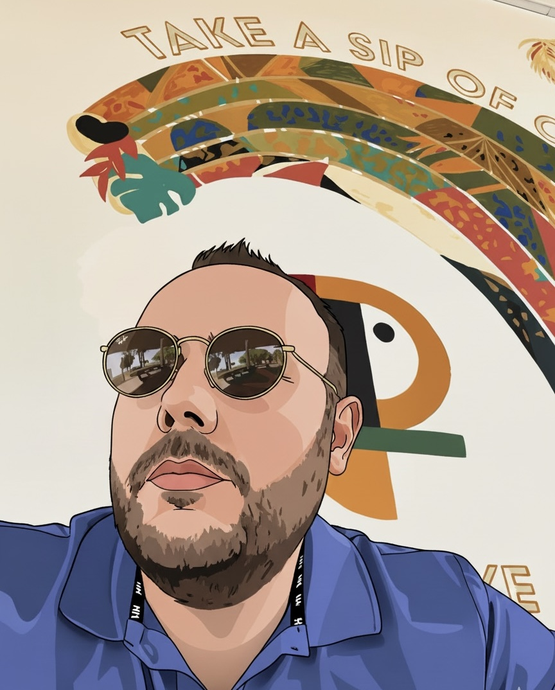

About TravelTap
TravelTap was born from a simple question: why is it so hard to keep track of the places you dream of visiting? Spreadsheets feel impersonal. Notes apps get cluttered. Travel blogs inspire you but don't help you act. I wanted something different — a single, beautiful app that lives in your pocket and grows with every adventure you take.
Built by an independent developer from Turkey, TravelTap started as a personal project to solve a personal problem: a love of travel and no good tool to capture it. What began as a handful of handpicked attractions quickly evolved into a global catalogue of over 15,000 curated destinations spanning 195+ countries across all seven continents.
What I Built
TravelTap is your pocket travel companion — part atlas, part bucket list, part travel diary. Open the app and you'll find a world of carefully selected attractions, from iconic landmarks like the Eiffel Tower and Machu Picchu to hidden temples, remote national parks, and neighbourhood gems that guidebooks overlook.
Every attraction in TravelTap comes with rich details: practical information like entrance fees, opening hours, and tips for getting there, alongside inspiring descriptions and photos that make you feel the place before you even book a flight. Tap the map and see exactly where each attraction sits in context. Save the ones that call to you, mark the ones you've visited, and watch your travel story take shape over time.
Built for Every Kind of Traveler
Whether you're a seasoned explorer who has stamped dozens of passports, a first-time traveller nervous about where to start, or someone sitting at home building their dream bucket list for the years ahead — TravelTap was made for you. There are no complicated setups, no mandatory accounts, and no overwhelming interfaces. Just open the app and start discovering.
The category filters let you navigate by what moves you — historical sites, natural wonders, museums, local culture, food scenes, or transport hubs. The interactive world map gives you a bird's-eye view of where you've been and where you're going, while your travel stats turn every trip into a milestone worth celebrating.
My Commitment
I believe that great travel tools should be accessible to everyone. That's why the core experience — discovery, bucket listing, and offline access to your saved places — is free. Premium country packs unlock deeper content for travellers who want to go further, helping me keep the app growing and improving.
Every attraction in my catalogue is hand-reviewed. I don't rely on automated scraping or user-generated noise. If a place is in TravelTap, it's there because I believe it's genuinely worth your time and attention.
Technology Behind TravelTap
TravelTap is a native iPhone app built entirely in Swift and SwiftUI, designed to feel fast, fluid, and at home on iOS. Location services and rich point-of-interest data are powerfully backed by Google Maps Platform and Google Places API, running on scalable Google Cloud Infrastructure. This ensures highly accurate coordinates, authoritative reviews, and up-to-date place data at a global scale. Your bucket list and travel history are stored privately on your device — I don't collect or sell your personal data.
The Journey Ahead
I am a solo, independent developer — and that's something I'm proud of. Every update, every new country added, every bug fixed is done with genuine care. I'm building TravelTap for the long haul: more destinations, smarter recommendations, richer trip-planning features, and a community of travellers who inspire each other to see more of this extraordinary world.
Thank you for being part of this journey. The world is wide — let's explore it together.
